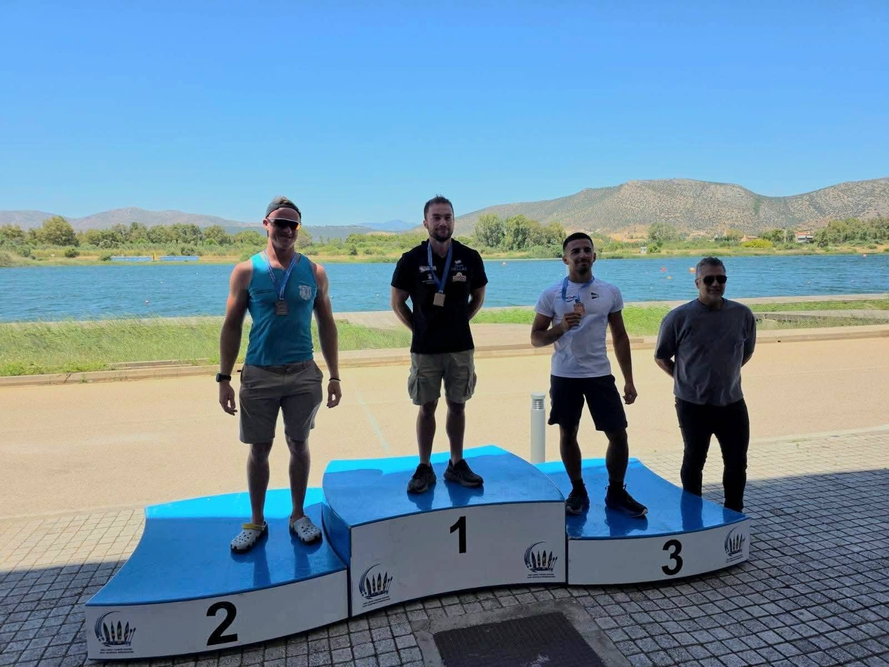
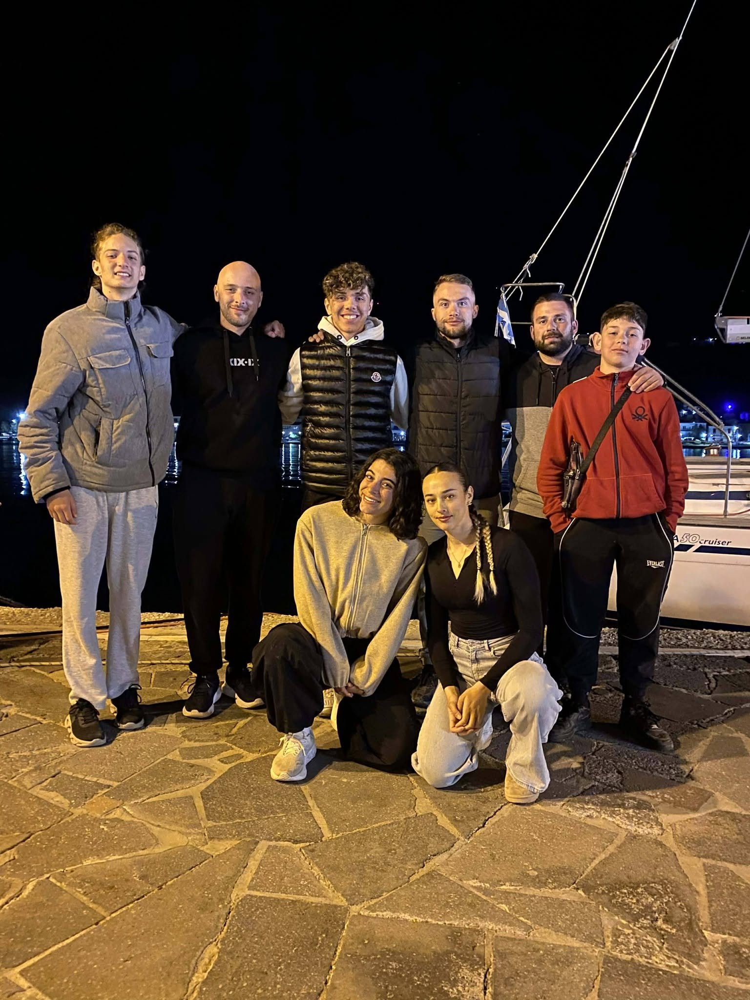
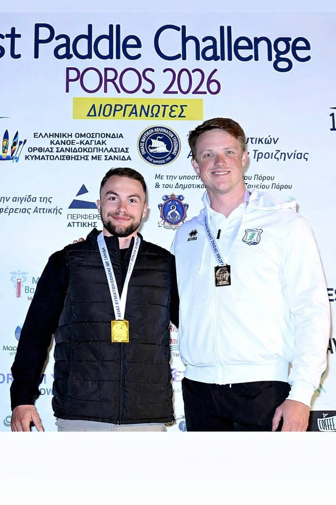
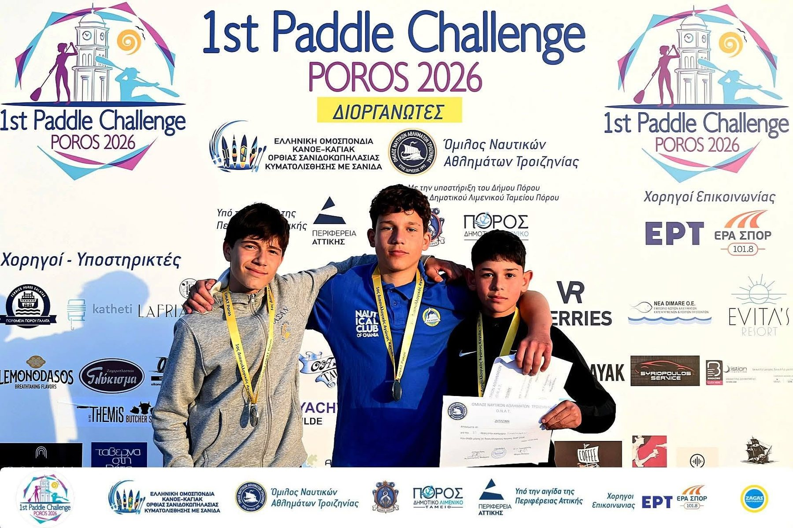
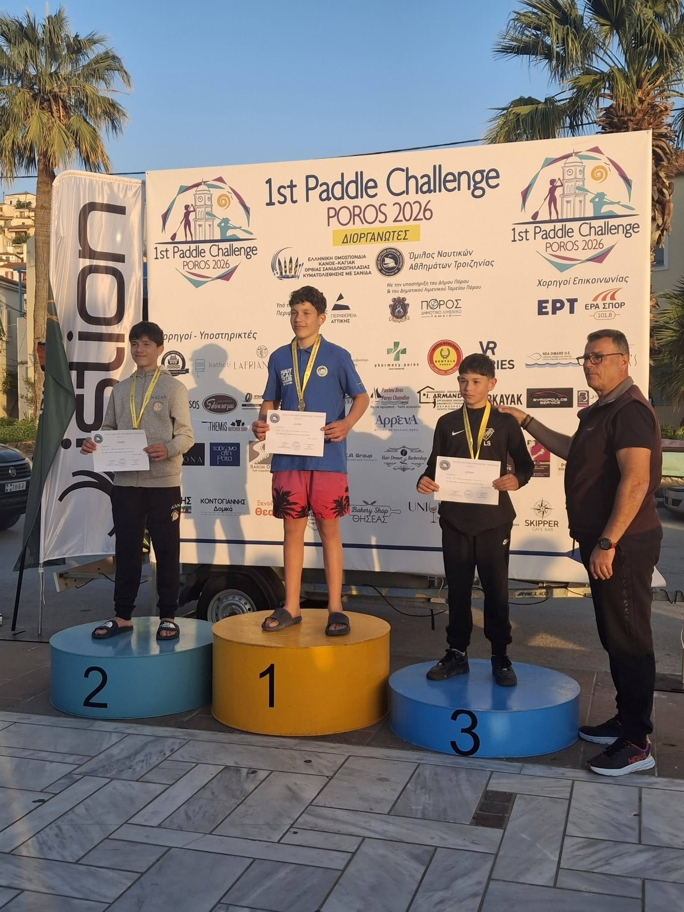
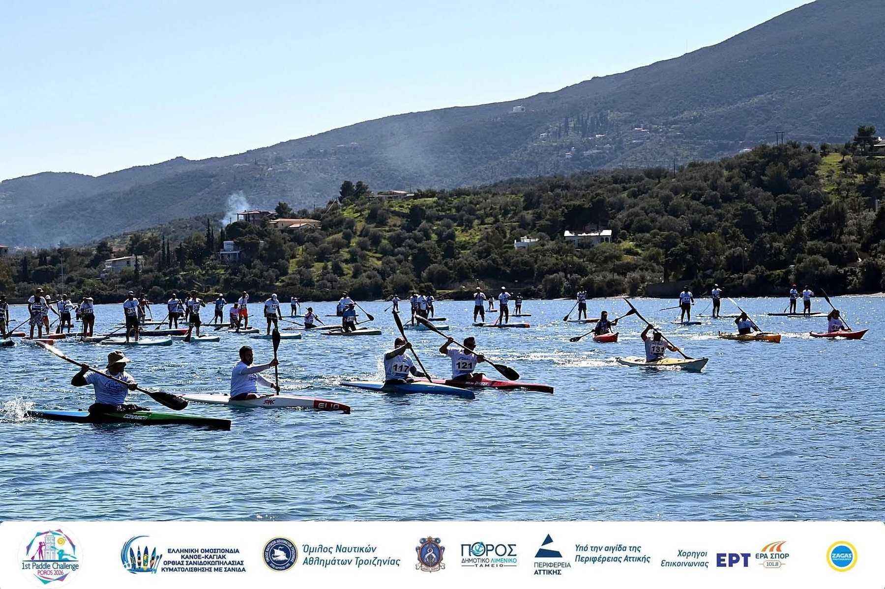

Αγώνες • ΠΟΡΟΣ 2026
1st Paddle Challenge Poros 2026
Μια δυνατή αγωνιστική παρουσία με διακρίσεις και συμμετοχές αθλητών του ΝΟΠ.
Δυναμική παρουσία του ΝΟΠ στον Πόρο
Ο Ναυτικός Όμιλος Παμβώτιδος έδωσε δυναμικό παρών στη διοργάνωση του Πόρου, συνδυάζοντας αγωνιστικές συμμετοχές στο Κανόε-Καγιάκ και στο SUP με σημαντικές διακρίσεις των αθλητών του.
Στο υλικό της διοργάνωσης αποτυπώνεται η παρουσία αθλητών του Ομίλου στα βάθρα, σε διαφορετικές κατηγορίες και αγωνίσματα, επιβεβαιώνοντας τη δυναμική της νέας αγωνιστικής περιόδου.






Οι αναλυτικές θέσεις και οι διακρίσεις που έχουν καταγραφεί για τη σεζόν 2026 βρίσκονται στη σελίδα των αποτελεσμάτων.
Δείτε τα αναλυτικά αποτελέσματα του ΝΟΠ →